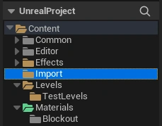
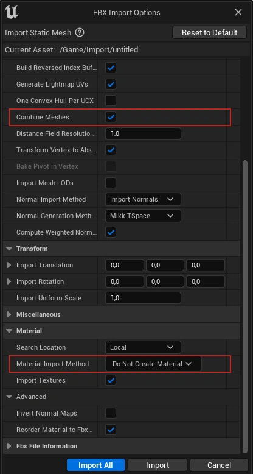

days left until the written report deadline
Workflow
1.1. Asset Creation Workflow
- Create a new folder for the asset working files in the
TNM061 Projekt\Production\ContentSource\<yourname>folder - Gather references
- Look up the dimensions of the object. For furniture and similar objects, IKEA is a good source of reference for dimensions.
- Search for and find images of the object you are going to model that shows it from multiple angles.
- PureRef is a very handy tool for collecting references
- Create a base mesh/model
- A base mesh captures the overall shape and silhouette of the object but does not have a lot of details. A model "sketch"
- Export the base mesh and import it in Unreal Engine
- See "Export the mesh and import it in Unreal Engine" point below for importing details
- It's important to check that the model have proper proportions and dimensions compared to the other objects within the engine
- Make any required scale corrections outside of Unreal Engine (in Maya/3DS Max/Blender)
- Finalize the model
- Add in any remaining details and start optimizing the model by reducing unecessary geometry that does not contribute to it's silhouette or shape (such as redundant edge loops)
- Make sure to ajust the origin of the mesh. Either place it at the center of the mesh, the center of the bottom section of the mesh or at a corner of the mesh bounding box. Otherwise snapping, rotation and translation becomes a hassle.
- Apply any scale and/or rotation transformations if applicable
- Join any non-moving mesh parts into a single mesh (or )
- UV-unwrapping
- Every model requires UV-maps to work properly with materials
- Triangulate the mesh (Optional as Unreal does it for you, though it can sometimes result in shading artifacts)
- Export the mesh and import it in Unreal Engine
- Export the model as an
.fbxfile - Import the model by dragging the file into into the
Content\Importfolder  - In the FBX importer, make sure to set Material Import Method as Do Not Create Material
- If you have not merged all the parts of your model into a single mesh, make sure to select Combine Meshes to have Unreal do it during the import 
- Export the model as an
- Assign material(s)
- Create a material instance from the
Content\Materials\Templates\MT_PBR_Standardfor materials with textures. Use theContent\Materials\Templates\MT_PBR_Untexturedfor plain, untextured, materials. - Override the corresponding texture channels in the material instance with the assets texture maps
- Click on the imported mesh/model to open up the Static Mesh editor. In the Details -> Material Slots panel, materials can be assigned to the mesh
- Create a material instance from the
- Test placing the asset in a map
- There's a test level for testing assets in
Content\Levels\TestLevels\AssetLevel
- There's a test level for testing assets in
- Add the asset the
Placeablefolder- Put the static mesh/model with the assigned material in the
Content\Placeables- Rename the static mesh to [SM]_[AssetName]
- Put the material instance in
Content\Materials- Rename the material instance to [M]_[AssetName]
- Put any textures in
Content\Textures- Rename the material instance to [T]_[AssetName]_[TextureTypeSuffix]
- See Naming conventions for full asset naming conventions
- Put the static mesh/model with the assigned material in the
Suggested folder structure for working on an asset:
* ContentSource\<yourname>\AssetName:
|- Export (exported model for Unreal Engine)
|- References (reference images)
|- Models (Maya/3DS Max/Blender project files)
|- Textures (texture files if applicable)
1.2. Rough Project Outline
- Prototyping
- Layout concepting
- Block-out environment
- Asset creation
- Inventory of required assets, division of labor
- Asset creation (modeling, unwrapping, export/import)
- Environment assembly
- Replace block-out meshes with created assets
- Lighting the level
- Particles, interactive elements
- Character/camera controller
- Content lock & review
- Evaluate environment, detail pass
- Remove any prototype/block-out meshes
- Final preparations
- Render HQ frames with "Movie Render Queue" 5
1
- LightmassImportanceVolume placement
- Per mesh Static Mesh resolution (not overrides)
- Lighmass Portal placement